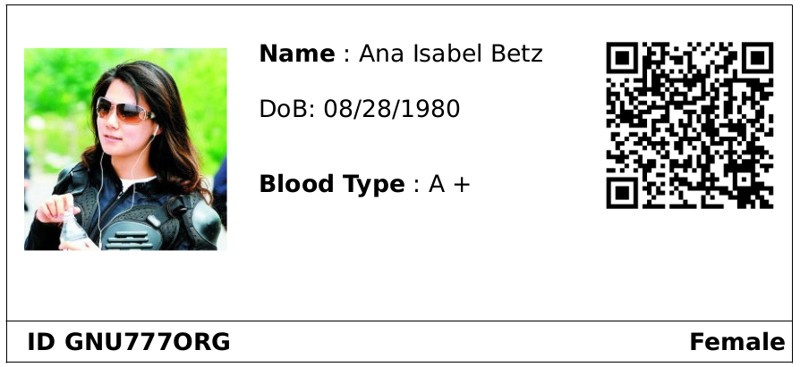

Introduction to Patient Management
Patients are parties with specific properties. These party properties differentiate them from the other parties. A patient is a party that has the following properties:
Person
Patient
In GNU Health, a person can be both a health professional and a patient at the same time. Makes sense, doesn’t it ?
Creating a party with the patient property
Depending on the size of your health center, patient creation can be done by different teams. Let’s go through the different stages of a party, and who could be in charge. We use the example of “Ana Betz” to go through a typical scenario that takes you from defining the party to create the associated patient.
Step 1: Party definition and demographics
{kind=link}
This information creates the individual person. At this point, Ana is just an individual (a physical person). The social worker can enter all the demographics about her (family, Domiciliary Unit, contacts.. ).
Note: The person that has been defined in GNU Health can be a patient at a later point. In some cases, this person will never be a patient from our health center, as it can be the case for family members that live in other countries.
Step 2: Enabling the patient attribute in the party
Now let’s suppose that Ana - that was created on the system a while ago - shows up to the primary care center for a health checkup. She will give the Social Security Number (SSN) or other type of unique identifier to the officer at the frontdesk, and at this moment, Ana will become a patient in the Health System of her region or country.
Note: The SSN field (translated to other names depending on the country) is the unique value that identifies each person. Please check the section Individuals for more information.
Listing the current patients
{kind=link}
You can access the patient main menu from Health → Patients. This menu action will show all the patients. Patients are parties that have the patient attribute set and that have a patient record associated with it. You can search patients from any of the fields on the tree view. You can enter any of the records by double clicking the patient record from the list. That action will take you to the form view. It you have permissions, then you will be able to edit it.
Creating a patient record
{kind=link}
You can create the patient from clicking on the new record icon or typing Ctrl + N. This will take you to the main patient form.
The first - and required - field is the link to the party that has been created earlier in the process. The search is limited to parties with the patient attribute.
{kind=link}
Printing a patient ID card
An ID card lets you quickly identify a patient by his PUID or by a machine readable QR code. Working with ID cards is faster and creates less errors than simply asking patients for their names and birth dates. It even works if a patient is not able to speak (spleeping, sedated, unconcious, or simply a newborn) or does not know how to spell his name exactly (not uncommon in countries with higher illiteracy rates).
To print an ID card, open the patient record, click the Report button in the toolbar and choose ID Cards or ID Cards - QR (depending on your needs). This will generate a file in the ODT format that can be opened and printed in your word processing application (e.g. LibreOffice Write or Microsoft Word).